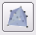
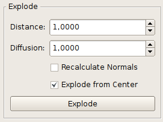
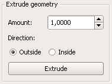
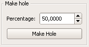
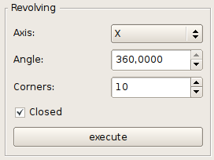
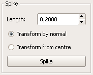
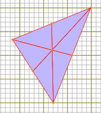

6. Objekt bearbeiten
Folgend finden sie die Möglichkeiten zur Manipulation von Szeneninhalten
6.1 Vertex
Vertices bieten aufgrund ihrer Einfachheit nur eine beschränkte Sammlung von Bearbeitungsmöglichkeiten
6.1.1 Vertizes verbinden
Menü -> Modify -> Triangulate
Beispiel

Ungebundene Vertices können automatisch zu Polygonen zusammengefasst werden. Die Vertexreihenfolge wird dabei von der Aufnahmreihenfolge der Vertices zur Selektion bestimmt.
6.1.2 Ausrichten
Menü -> Selection -> Arrange vertices together
Alle selektierten Vertices die zu einem Mesh-Körper gehören, werden an einen gemeinsamen Punkt verschoben. Dabei wird der erste Punkt der Selektion als Referenzort benutzt. Bei diesem Vorgang werden keine Vertices gelöscht.
Vorher: Selektierte Vertices vor der Zusammenfassung
Nachher: Selektierte Vertices nach der Zusammenfassung
Menü -> Selection -> Align vertices to axis -> X/Z/Y
Alle selektierten Vertices die zu einem Mesh-Körper gehören, werden an der gewählten Achse ausgerichtet. Dabei wird der erste Punkt der Selektion als Referenzort benutzt.Bei diesem Vorgang werden keine Vertices gelöscht.
Vorher: Selektierte Vertices vor der Ausrichtung
Nachher Beispiel 1: Ausrichtung anhand der Y-Achse
Nachher Beispiel 2: Ausrichtung anhand der X-Achse
6.2 Modifikatoren
Unter Modifikatoren versteht man Effekte die auf bestehende Geometrien angewand werden. Deswegen ist auch vor der Anwendung eines jeden Modifikators eine aktive Selektion vonnöten.
6.2.1 Konvexe Hülle
Toolbox -> Modificators -> Convex Hull
Beispiel
Generiert mithilfe der 'Convex Hull'-Technik ein neues Objekt , das alle selektierten Vertices umschließt. Es ist zum Beispiel besonders hilfreich um komplexe Objekte zu vereinen.
6.2.2 Explosion
Toolbox -> Modificators -> Explode
Beispiel
Verschiebt jedes selektierte Face um eine bestimmte Distanz, wodurch sich der Effekt einer Explosion ergibt. Durch den Parameter "Explode from Center" ist es möglich auszuwählen, ob die Verschiebung entlang der Normalen der Vertices oder vom Mittelpunkt der Selektion aus stattfinden soll. Mit "Diffusion" gibt man die Weite der Streuung an. Ist dieser Wert ungleich 0 werden die selektierten Faces zufällig im Distanzbereich zwischen Distance und Distance+Diffusion verschoben. Mit "Recalculate Normals" werden die Normalen der Faces neu berechnet. Diese Option hat nur eine Auswirkung, wenn die Vertices des Objekts "geteilt" (shared) sind.

Einstellungen/Parameter
| Distance: |
Distanz um die verschoben werden soll |
| Diffusion: |
Distanz der Streuung (Verschiebungbereich: zwischen Distance und Distance + Diffusion) |
| Recalculate Normals: |
Neuberechnung der Normalen |
| Explode from Center: |
Die Explosion findet vom Zentrum der Selektion aus statt. (ansonsten entlang der Normalen) |
6.2.3 Extrude
Toolbox -> Modificators ->

Extrude
Erzeugt eine Erhebung bzw. Versenkung in einem selektierten Face.

Einstellungen/Parameter
| Amount: |
Bestimmt die Höhe der extrudierten Erhebung |
| Direction: |
Richtung in die die Erhebung wächst. |
6.2.4 Makehole
Toolbox -> Modificators -> Make Hole
Beispiel
Stanzt ein Loch in jedes selektierte Face, wobei die Loch- und Rahmengröße in einem bestimmten Verhältnis zueinander stehen.

Einstellungen/Parameter
Percentage: Das Verhältnis zwischen Lochgröße und entstehendem 'Rahmen'.
6.2.5 Rotationskörper
Toolbox -> Modificators -> Revolving
Beispiel
Rotiert eine Liste von Vertices um einen Bestimten Winkel und verbindet dabei diese zu einem Körper. Dabei kann gewählt werden, um welche der 3 Achsen rotiert werden soll und wieviele Unterteilungen (Ecken) die Rotation beinhaltet. Wenn der Parameter "Closed" gewählt ist, wird der letzte Punkt der Liste mit dem ersten verbunden. Dadurch entsteht ein geschlossener Körper.

Einstellungen/Parameter
| Axis: |
Achse, um die rotiert werden soll |
| Angle: |
Der Winkel um den Rotiert werden soll |
| Corners: |
Anzahl der Unterteilungen (Ecken) der Rotation |
| Closed: |
Ob der Letzte und erste Punkt verbunden werden soll |
6.2.6 Weiche Ecken
Toolbox -> Modificators -> [ICON]SmoothCorners
Beispiel
Berechnet für jede Ecke aus den Normalen ihrer Eckvertices eine gemeinsame Normale. Dadurch erscheinen die Ecken weich.
6.2.7 Stacheln
Toolbox -> Modificators -> Spike
Beispiel
Fügt ein neues Vertex in jedes selektierte Face und generiert daraus Stacheln mit einer bestimmten Länge. Der Modifkator kann gleichzeitig bei Länge 0.0 dazu dienen, jedes Face in 3 Subfaces zu teilen.

Einstellungen/Parameter
| Length: |
Die Länge der Stacheln |
| Transform by normal: |
Gibt an, ob die Stacheln entlang der Face-Normale transformiert werden sollen |
|
Transform from centre: |
Gibt an, ob die Stacheln vom Zentrum des Meshes aus transformiert werden sollen |
6.2.8 Subdivision
Menü -> Modify -> Subdivide
Beispiel
Subdivision ist ein Verfahren, dass ein Modell durch das Einfügen neuer Vertices plastischer macht. Es hat den Vorteil, das das Originalmodel nicht sehr detailiert modeliert werden muss, um am Ende ein plastisches Modell zu erhalten. Außerdem lassen sich so Modelle in verschiedenen Detailgraden berechnen, die in Spielen verwendet werden können (sog. LOD – Weiter entfernte Objekte werden nicht so detailiert gerendert als nahe Objekte).
6.2.9 Split Face
Menü -> Modify -> Split face ... -> ... into 2(3,4,5,6) subfaces

Beispiel:
In 6 Teile 'zerschnittenes' Face
Hier können Faces in eine bestimmte Anzahl 'zerschnitten' werden. Dabei wird jedes selektierte Face durch eine entsprechende Anzahl neuer Faces ersetzt. Zur Verfügung stehen die Teilung eines Faces in 2, 3, 4, 5 und 6 Teile.
6.2.10 Vertex einfügen
Toolbox -> Modificators -> Insert vertex
Beispiel
Fügt zwischen zwei selektierten Vertices einen neuen Vertex ein und verbindet diesen mit den an den selektieren Vertices verbundenen Faces. Wichtig ist hierbei, dass zwar mehr als zwei Vertices selektiert werden können, diese aber zwingend genau zwei verschiedene Positionen haben müssen. D.h. es müssen nicht zwigend zwei komplett individuelle Vertices selektiert werden.
6.3 Manuelle Bearbeitung
Menü -> Modify -> Manual Edit (Strg + Shift + E)
Manuelle Bearbeitung
Hier können Daten von selektierten Vertices manuell bearbeitet werden. Es können die Vertexposition (X/Y/Z), der Normalenvektor (nX/nY/nZ) und die 1. Texturkoordinate (U/V) geändert werden. Die Genauigkeit der Darstellung liegt bei 6 Nachkommastellen.
6.4 Allgemeine Bearbeitung
6.4.01 Transformation
Menü -> Edit
Hiermit können verschiedene logische Einteilungen von Szenenobjekten geändert werden
| Make mesh from polygons |
Aus allen selektierten Polygonen wird ein einziges Mesh erzeugt |
|
Extract polygons from mesh |
Die einzelnen Polygone eines Meshes werden extrahiert und verlieren ihre Zugehörigkeit zu einem Mesh |
| Merge meshes |
Mehrere selektierte Meshes werden zu einem Gesamtmesh zusammengefasst |
6.4.02 Spiegelung
Menü -> Edit -> Mirror local -> X/Y/Z
Beispiel: Y-Spiegelung
Selektierte Szenenobjekte werden an ihrer Position entsprechend der gewählten Achse gespiegelt.
Dabei wird keine Kopie erzeugt und eingefügt sondern das selektierte Objekt direkt gespiegelt.
Menü -> Edit -> Mirror world -> X/Y/Z
Neben der lokalen Spiegelung gibt es noch die Möglichkeit eine Selektion an den Weltachsen spiegeln zu lassen.
Dies entspricht in etwa dem Effekt der Echtzeitspiegelung (Siehe Kapitel 5.8), nur mit dem Unterschied dass hierbei
eine tatsächliche Translation stattfindet.